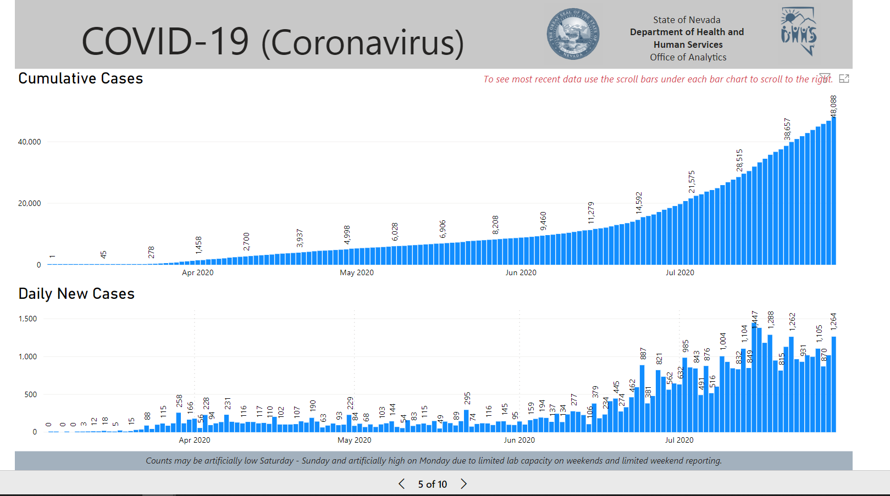
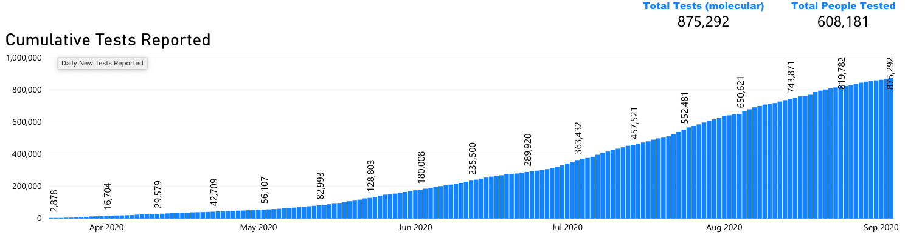

[NV] PCL Cases Historicals
Issue number 719
the-daniel-lin opened this issue on July 31, 2020 at 7:02 pm
Labels Historical Data not stale Backfill
State or US: Nevada
Describe the problem Our Positive Cases (PCR) column only goes back to 4/29. The NV dashboard, on the 5th slide, has a hover-over graph that reports “Cumulative Cases” dating back to 3/4. These values match up with the ‘Confirmed Cases’ value on the first slide.
*** Note: I noticed two discrepancies between States Daily and NV’s chart for 6/25-6/26 (there may be more ?). Our States Daily values match with state screenshots. However, these discrepancies seem to be outliers, as the several other dates I checked throughout the four months all aligned with confirmed values.
Link to data source https://app.powerbigov.us/view?r=eyJrIjoiMjA2ZThiOWUtM2FlNS00MGY5LWFmYjUtNmQwNTQ3Nzg5N2I2IiwidCI6ImU0YTM0MGU2LWI4OWUtNGU2OC04ZWFhLTE1NDRkMjcwMzk4MCJ9
Graph looks like this: 
There are a number of discrepancies but they all seem to be human error, e.g. transposing digits and such. Based on screenshots, the error seems to have been with the state and not with our data entry team. Since these were mistake corrections by the state instead of continuously revised data, the backfill team agreed we can pull them in.
In addition to the chart Daniel screenshotted, on the previous page the dashboard has data for total tests that similarly matches our data for total tests (PCR) except with a few corrections and going back into March.

The result is three updated columns: positive cases (PCR), positives, and total tests (PCR). (Our positives for NV are identical to positive cases.) Our positive cases (PCR) now extends back to 3/5 as a result of this backfill. Total tests (PCR) now extends back to 3/22 (formerly it ended at 4/29).
Spreadsheet with analysis and before/after data: https://docs.google.com/spreadsheets/d/1QLtUsLbO0HZ4xQQJlVGzf9nbmc31QVy9lqp1sNaZs7s/edit#gid=0